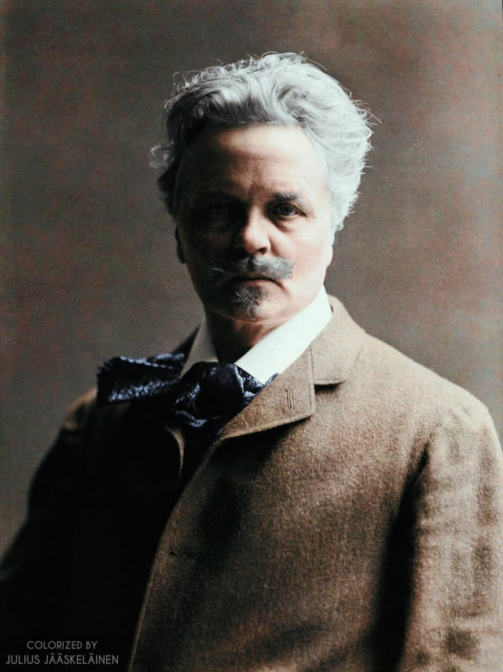

Johan August Strindberg, född 22 januari 1849 i Stockholm, död 14 maj 1912 i Stockholm, var en svensk författare. Under fyra decennier var Strindberg en framträdande gestalt i det litterära Sverige. Han var omdiskuterad och inte sällan involverad i personkonflikter. Bland hans verk finns ett flertal romaner, noveller och dramer som räknas som klassiker inom svensk litteratur, och han räknas som en av Sveriges mest betydelsefulla författare. Internationellt är han dock främst känd som dramatiker. Han var även verksam som bildkonstnär och målade och fotograferade, även om detta främst uppmärksammats av eftervärlden. Strindberg var mycket produktiv, trots perioder av improduktivitet, och banbrytande inom flera genrer. Allmänt betraktas han som en nydanare av det svenska språket. Strindberg tillhörde kretsen kring de så kallade åttiotalisterna och var delvis engagerad i frågorna för den framväxande arbetarrörelsen. Han ägnade sig också i perioder åt självständig, egensinnig forskning inom naturvetenskap och ockultism. Källa.
